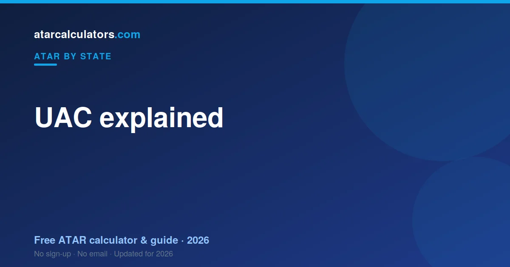

UAC, the Universities Admissions Centre, is the body that scales HSC results, calculates the ATAR, and manages university applications for New South Wales and ACT students. NESA sets and marks the HSC exams; UAC takes those marks, scales them, works out your ATAR, and processes your university preferences.
Key takeaways
- UAC is the Universities Admissions Centre for NSW and the ACT.
- It scales HSC marks and works out your ATAR.
- It also manages your university applications and preferences.
- NESA is different: it sets and marks the HSC exams.
- So NESA gives you your HSC; UAC gives you your ATAR.
- You register with UAC during Year 12 to apply for university.

What is UAC?
UAC stands for the Universities Admissions Centre. It is a central body that handles university admissions for students in New South Wales and the ACT.
Rather than applying to each university separately, you apply once through UAC and list your course preferences. UAC then processes those applications on behalf of the universities.
What does UAC do?
UAC does three main jobs. It scales your HSC marks. It calculates your ATAR from those scaled marks. And it manages your university applications and preferences.
So UAC is involved at both ends: it turns your HSC results into an ATAR, and it uses that ATAR to process your university offers.
UAC versus NESA: what is the difference?
This trips up a lot of students. NESA, the NSW Education Standards Authority, runs the HSC. It sets your courses, writes your exams, and gives you your HSC marks.
UAC takes over from there. It scales those HSC marks and works out your ATAR. In short: NESA gives you your HSC; UAC gives you your ATAR. They are two separate bodies with two separate jobs.
How UAC works out your ATAR
Once NESA releases your HSC marks, UAC scales each subject, based on how strong its cohort is. It then takes your best 10 units of scaled marks, including English, and adds them into an aggregate.
That aggregate is ranked against your age group and turned into your ATAR, from 0.00 to 99.95. We cover the full process in how is ATAR calculated in NSW.
Applying to university through UAC
During Year 12, you register with UAC and list your university course preferences, in order. You can change these preferences up to certain deadlines, including after you receive your ATAR.
After results, UAC matches your ATAR and selection rank against course cutoffs and sends offers in rounds. You do not apply to each university separately — UAC handles it centrally.
Key UAC dates
The UAC year has a few key moments: registration and preference deadlines during the year, ATAR release in mid-December, and offer rounds through January and February.
UAC publishes exact dates on its website. It is worth noting the preference-change deadlines, because you can adjust your choices after seeing your ATAR. See the NSW results timeline.
Estimate your ATAR
You can estimate your ATAR before UAC releases the official one. Our NSW ATAR calculator uses the latest official scaling to estimate your ATAR from your HSC marks.
It is a guide, not your official UAC result, but it helps you plan your preferences with realistic expectations.
UAC and the ATAR: the full picture
UAC sits between school and university in NSW and the ACT. It takes your scaled HSC marks, works out your ATAR, and then uses that ATAR to process your university applications.
So UAC is involved at both ends. It turns your HSC results into a rank, and it uses that rank to send you offers. Your school and NESA handle the HSC itself; UAC handles the ATAR and admissions.
What else UAC handles
Beyond the ATAR, UAC runs several schemes worth knowing. The Schools Recommendation Schemes let some students receive early offers based on Year 11 results. The Educational Access Schemes support students who faced disadvantage during Year 12.
UAC also manages many scholarship applications and equity programs in one place. So it is worth exploring the UAC site early, not just at results time, because some of these schemes have deadlines during the year.
UAC versus NESA in detail
These two bodies are easy to mix up. NESA, the NSW Education Standards Authority, runs the HSC: it sets your courses, your exams, and your HSC marks and bands. UAC, the Universities Admissions Centre, takes those marks, scales them, and works out your ATAR.
In short: NESA gives you your HSC; UAC gives you your ATAR. NESA is about your schooling; UAC is about university entry. Keeping them apart makes results day much clearer.
Key UAC dates through the year
The UAC year has a rhythm. Applications and early-offer schemes open during the year, with deadlines you do not want to miss. Preferences can be set and changed up to certain dates, including after your ATAR.
Then ATAR release comes in December, followed by offer rounds through January and February. Note the preference-change deadlines especially, because you can adjust your choices once you see your ATAR. See the NSW results timeline.
How UAC preferences work
Through UAC, you list your university courses in order of preference, rather than applying to each separately. UAC then tries to give you an offer for the highest preference you qualify for.
You can change your preferences up to set deadlines, including after your ATAR is released. So it is worth listing a range: a reach course, a solid match, and a safe option, then adjusting once you see your rank.
The offer rounds explained
Offers are not all made at once. UAC releases them in rounds, starting with a main round in January and continuing through January and February.
If you do not receive your first preference in the main round, later rounds still give you chances, and you can adjust preferences between rounds. A quiet first round is not the end of the process.
UAC for ACT students
UAC serves the ACT as well as NSW. ACT students complete their senior secondary certificate and receive an ATAR through UAC, applying for university in the same way.
So if you are studying in the ACT, the same UAC process applies: scaled results become an ATAR, and that ATAR drives your university offers through UAC preferences.
Getting help from UAC
UAC publishes detailed guides on its website covering applications, preferences, adjustment schemes and key dates. Most questions students have are answered there, so it is worth reading before results time.
If you are stuck, UAC has support channels to help with your application and preferences. Reaching out early, rather than in the rush around results day, means you get clear answers when it counts.
Common questions
What is UAC?
UAC is the Universities Admissions Centre, the body that manages university admissions for New South Wales and ACT students. It scales HSC marks, calculates the ATAR, and processes university applications.
What does UAC do?
UAC scales your HSC marks, works out your ATAR, and manages your university applications and course preferences. It handles admissions centrally, so you apply once rather than to each university.
Is UAC the same as NESA?
No. NESA sets and marks the HSC exams and gives you your HSC marks. UAC scales those marks and works out your ATAR. NESA gives you your HSC; UAC gives you your ATAR.
How does UAC work out my ATAR?
UAC scales each HSC subject based on its cohort, takes your best 10 units of scaled marks including English, adds them into an aggregate, and ranks that aggregate into an ATAR from 0.00 to 99.95.
What is the difference between UAC and NESA?
NESA runs the HSC: it sets your courses, exams, and HSC marks. UAC takes those marks, scales them, and works out your ATAR, then processes your university applications. NESA gives you your HSC; UAC gives you your ATAR.
Does UAC handle early offers and scholarships?
Yes. Beyond the ATAR, UAC runs the Schools Recommendation Schemes for early offers, the Educational Access Schemes for students who faced disadvantage, and many scholarship applications in one place.